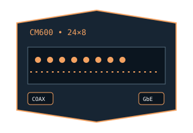

[ MODEL-SPECIFIC NETWORK HARDWARE ]
NETGEAR CM600 DOCSIS 3.0 Cable Modem
Standalone 24×8 DOCSIS 3.0 cable modem for a coaxial ISP circuit and single Gigabit Ethernet router/host connection.

EXACT MODEL / SKU: CM600-1AZNAS, North American retail SKU. Do not apply this record to other region or ISP-branded hardware variants.
Exact specifications and compatibility
| Model / SKU | NETGEAR CM600-1AZNAS; product model CM600. |
|---|---|
| Modem standard | DOCSIS 3.0, backward compatible with DOCSIS 2.0; 24 downstream × 8 upstream bonded channels. |
| Interfaces | Coaxial F-connector WAN; 1 × 10/100/1000BASE-T RJ-45 Ethernet handoff. |
| Downstream / upstream | Manufacturer advertises up to 960Mb/s downstream. Eight bonded upstream DOCSIS channels are supported; upstream tier and actual channel provisioning depend on the cable provider. |
| Telephone service | No telephone jack or eMTA/voice service; not compatible with bundled cable-phone service that requires a voice-capable modem. |
| Provider compatibility | NETGEAR identifies Xfinity, Spectrum and Cox among compatible US cable services, subject to current provider approval, service tier and exact SKU. |
| Firmware / host compatibility | Firmware and DOCSIS configuration are ordinarily supplied by the cable ISP. Ethernet operation needs no model-specific PC driver; confirm the provider still activates this model and supports its firmware. |
| Power and safety | 12V DC, 1.5A input. Use the supplied/approved adapter and indoor outlet, allow airflow around the enclosure, keep liquids away, and do not open the unit. |
Model-specific notes
The single Gigabit Ethernet connection and provider service tier can limit usable throughput below the DOCSIS channel aggregate. The advertised download figure is not a measured result or an upload rate.
Manufacturer specifications and manual
- NETGEAR CM600-1AZNAS official data sheetModel/SKU-specific DOCSIS, channel, Ethernet and electrical specifications.
- NETGEAR CM600 User ManualManufacturer-hosted installation, configuration, safety and troubleshooting guide.
- NETGEAR CM600 support and downloadsOfficial product support route; confirm current downloads and exact provider compatibility.